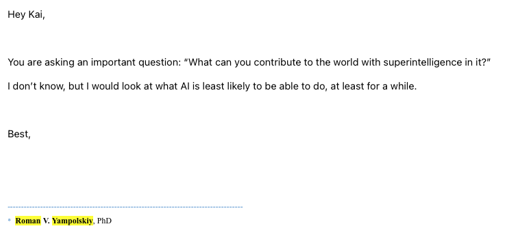
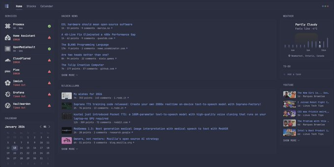

Do you believe in a multiplanetary species?
For human civilization to actually become a multiplanetary species, countless things have to come in order. But I want to give you a thinking problem:
Imagine if Elon Musk had a rocket ship (Starship) that was about to be sent to Mars with people on it. Starship is known to carry around 100 people. That would mean we would need to send 80 million rockets to Mars, so, who would get the seats? Politicians? Scientists? Wealthy people?
I, along with most people, would assume there would be a couple hundred prominent figures (Billionaires, politicians, rich people), then the rest would be "useful" individuals, scientists, construction workers, architects. It's all thought out so you have a perfect amount of needed individuals to thrive as a space colony. But, before you come up with your answer, I want to add another variable to the situation.
There is an AGI spread throughout the world. Everyone can use it. It can run on consumer low-wattage hardware (can be moved and requires little electricity). Then, you wouldn't need scientists or politicians.
Now, again, let me add another variable to the equation: you include humanoid robots. They are fully controlled by this "AGI" and can complete and build any infrastructure. Then, you wouldn't need construction workers, or architects.
I think you see what I'm getting here.
Soon enough, in your lifetime, you will be irrelevant.
You might ask, "what can I do?" To that, my answer is: to look at what AI can do, to follow it, to understand capabilities and learn from it.
Last year I emailed Roman Yampolskiy, a famous AI Researcher with a similar problem. This was his response.

I truly believe everyone should be forward facing and try to use and learn AI in every aspect of their life. It's the most powerful tool ever created and people who don't use it will fall behind.
I currently have models running on my phone better than GPT-4. Progress is exponential.
Neglecting will only make you Amish in the new world.
How to keep up
Before you go on and read about good places to find information on AI, you need to be interested.
Being interested in something is the only way to truly keep up to date. I could not force myself to keep up to date with horoscopes even if it was changing the world.
1. X dot com
I know you are already likely on X.com on the daily basis, but I might suggest tightening your following to have a purely technical feed. I have multiple different accounts for different things. I have many accounts, some for AI, some for Bodybuilding, and even espresso (yes, I like making coffee).
2. SubReddits
I know this one is cliche; however, being in a smaller community that is more fit for your interests instead of an endless feed might be even better for you. I like r/LocalLLaMA the most.
3. AI Search
If you only care about new models, AI Search is a really good option to stay up to date with. I've watched plenty of Matt Wolfe, TheAIGrid, and many others, but AI Search is always more to-the-point and uses every second of the video well.
4. Hacker News
Hacker News is much more general than the others, as it's more involving of all of engineering than specifically AI. However, I find myself learning more from Hacker News than any other outlet.
5. Hugging Face
I commonly find myself just going to Hugging Face to see trending models. These are only open-source models, but I often find myself finding models before I hear about them in other places. In fact, I have an automation set up where whenever a major lab releases something on Hugging Face, I get an email so I'm the first at the pie.
6. Glance
If you really want a fast way to collect all the news at once, try Glance. Glance is a self hosted website to curate news and act as your home portal. This is more for home-labbers however I felt it was still important to mention as I use this every day for my news.

The most important part
Do it yourself. I can't stress this enough: trying things yourself is the most important thing that you can do. Looking at benchmarks and other people's reactions is not enough; those are only filters.
I have personally invested in 128GB of RAM, with a high-end Ryzen X3D chip for inference, just to test models, not for day-to-day use (token/s is very bad), but I can run plenty of models on it. I would argue it's smarter to temporarily rent compute (a single H100) for a couple of hours to test the model, but I like the idea of it being local more.
Even if you have no compute, try to get an LLM working on your device—any of them. That one experience will teach you more than any news or benchmark you see.
Moral of the story: I would strongly advise for you to learn and keep up to date with AI; or more informed than the average person.
And I hope to see you on that rocket ship.